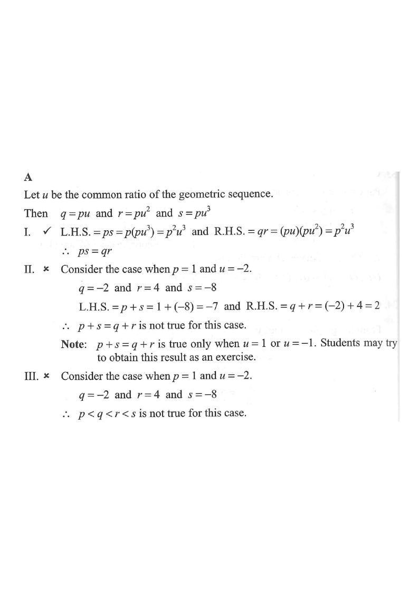

Highlighting: Step 1 — the common ratio $u$ links consecutive terms.
Question. If $p,\;q,\;r,\;s$ is a geometric sequence, which of the following must be true?
I. $ps = qr$
II. $p + s = q + r$
III. $p < q < r < s$

Let $u$ be the common ratio of the geometric sequence. Since $p$ is the first term,
$q = pu,\qquad r = pu^{2},\qquad s = pu^{3}.$
Every term is the previous term multiplied by the same number $u$ — this is the definition of a geometric sequence.Compute the left-hand side and the right-hand side of $ps = qr$:
$\text{L.H.S.} = ps = p\,(pu^{3}) = p^{2}u^{3}$
$\text{R.H.S.} = qr = (pu)(pu^{2}) = p^{2}u^{3}$
Since L.H.S. $=$ R.H.S., statement I is always true ✓.
This holds for every choice of $p$ and $u$ — it is an identity for geometric sequences.Try a concrete case: let $p = 1$ and $u = -2$. Then
$q = -2,\quad r = 4,\quad s = -8.$
$\text{L.H.S.} = p + s = 1 + (-8) = -7$
$\text{R.H.S.} = q + r = (-2) + 4 = 2$
Since $-7 \ne 2$, statement II is not always true ✗.
One counter-example is enough to disprove a “must be true” claim. Note: $p+s=q+r$ only holds when $u=1$ or $u=-1$.Using the same counter-example, $p = 1,\; q = -2,\; r = 4,\; s = -8$:
$1 < -2$ is false,
so the chain $p < q < r < s$ is not always true ✗.
A negative common ratio makes the terms alternate in sign — the sequence is not monotonic.Only statement I is necessarily true. Hence the answer is A. I only.
Key idea: for a geometric sequence with common ratio $u$, the middle term is the geometric mean of its neighbours: $q^{2}=pr$, and in fact $ps=qr$ (both equal $p^{2}u^{3}$).
Check each option: II and III fail for $u=-2$; I survives for all $u$.Question. Let \(p\), \(q\), \(r\) and \(s\) be four consecutive terms of a geometric sequence with common ratio \(u\). Which of the following must be true? I. \(q^{2}=pr\) II. \(p+r=q+s\) III. \(p